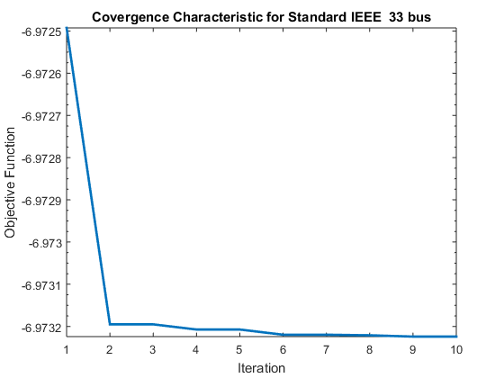
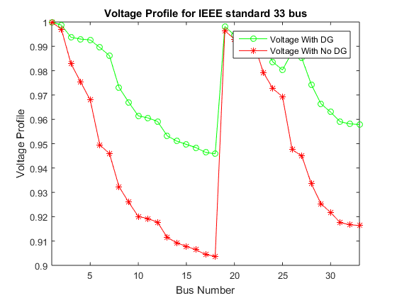
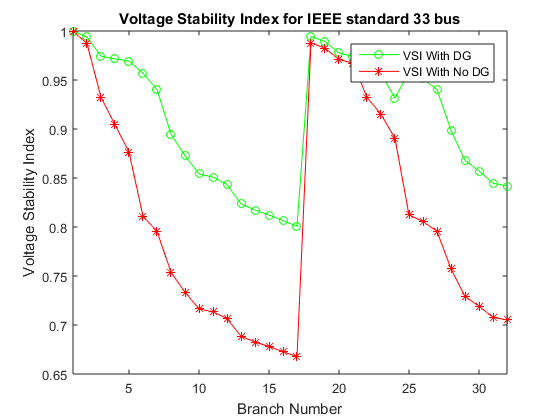
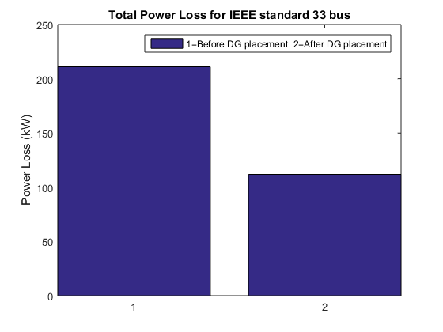
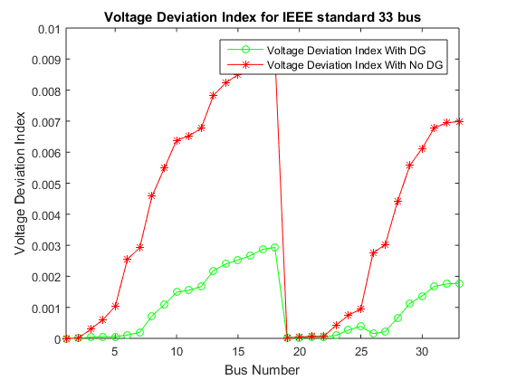
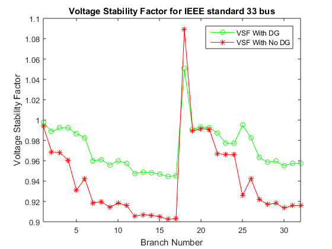

Contents
clc;
clear;
close all;
tic
DistLoadFlowSolution=powerflow;
Problem Definition
User.Function ='obj_Dg_LRI_n_VPII';
User.NumVar=3;
bn=33;
User.Lb=[1000 1];
User.Ub=[5000 bn];
varsize=size(User.Lb);
Standard = true;
Bus_Data = 'Ayepe ';
Parameter of PSO
kappa = 1;
phi1 = 2.05;
phi2 = 2.05;
phi = phi1 + phi2;
chi = 2*kappa/abs(2-phi-sqrt(phi^2-4*phi));
User.MaxIt=10;
User.nPop=50;
User.w=chi;
User.c1=chi*phi1;
User.c2=chi*phi2;
wdamp=1;
MaxVelocity = 0.2*(User.Ub-User.Lb);
MinVelocity = -MaxVelocity;
Initialization
empty_particle.DGnLoc = [];
empty_particle.Velocity = [];
empty_particle.CostPLosVolt = [];
empty_particle.Best.DGnLoc = [];
empty_particle.Best.CostPLosVolt = [];
particle=repmat(empty_particle,User.nPop,1);
GlobalBest.CostPLosVolt=inf;
for i=1:User.nPop
particle(i).DGnLoc=round(User.Lb+(User.Ub-User.Lb).*rand(size(User.Lb)));
DistLoadFlowDGSolution=powerflowDG(particle(i).DGnLoc(1,1),particle(i).DGnLoc(1,2));
particle(i).CostPLos=[DistLoadFlowDGSolution.PtLosskW];
particle(i).CostPbrLos=[DistLoadFlowDGSolution.Pbrloss];
particle(i).CostVact=[DistLoadFlowDGSolution.Vactual];
particle(i).CostVolt=[DistLoadFlowDGSolution.VmagPU];
particle(i).CostVSI=[DistLoadFlowDGSolution.VSI];
particle(i).CostMinVolt=[DistLoadFlowDGSolution.minVSI];
particle(i).CostVangle=[DistLoadFlowDGSolution.Vangle];
particle(i).CostVSF=[DistLoadFlowDGSolution.VSF];
particle(i).CostVSFsum=[DistLoadFlowDGSolution.VSFsum];
particle(i).CostVDI=[DistLoadFlowDGSolution.VDI];
particle(i).CostVDIsum=[DistLoadFlowDGSolution.VDIsum];
particle(i).CostQtLos=[DistLoadFlowDGSolution.QtLosskVAr];
particle(i).CostQbrLos=[DistLoadFlowDGSolution.Qbrloss];
particle(i).CostSLos=[DistLoadFlowDGSolution.SLosskVA];
particle(i).Velocity=zeros(varsize);
particle(i).CostPLosVolt=feval(User.Function,...
DistLoadFlowSolution.PtLosskW,particle(i).CostPLos,...
DistLoadFlowSolution.QtLosskVAr,particle(i).CostQtLos,...
particle(i).CostVSFsum,particle(i).CostVDIsum);
particle(i).Best.DGnLoc=particle(i).DGnLoc;
particle(i).Best.CostPLosVolt=particle(i).CostPLosVolt;
if particle(i).Best.CostPLosVolt < GlobalBest.CostPLosVolt
GlobalBest=particle(i).Best;
end
end
BestCosts=zeros(User.MaxIt,1);
Main Loop of PSO
for It=1:User.MaxIt
for i=1:User.nPop
particle(i).Velocity=User.w*particle(i).Velocity...
+User.c1*rand(varsize).*(particle(i).Best.DGnLoc-particle(i).DGnLoc)...
+User.c2*rand(varsize).*(GlobalBest.DGnLoc-particle(i).DGnLoc);
ns_tmpV=particle(i).Velocity;
IV=ns_tmpV<MinVelocity;
ns_tmpV(IV)=MinVelocity(IV);
JV=ns_tmpV>MaxVelocity;
ns_tmpV(JV)=MaxVelocity(JV);
particle(i).Velocity=ns_tmpV;
particle(i).DGnLoc=round(particle(i).DGnLoc + particle(i).Velocity);
ns_tmp=particle(i).DGnLoc;
I=ns_tmp<User.Lb;
ns_tmp(I)=User.Lb(I);
J=ns_tmp>User.Ub;
ns_tmp(J)=User.Ub(J);
particle(i).DGnLoc=ns_tmp;
DistLoadFlowDGSolution=powerflowDG(particle(i).DGnLoc(1,1),particle(i).DGnLoc(1,2));
particle(i).CostPLos=[DistLoadFlowDGSolution.PtLosskW];
particle(i).CostPbrLos=[DistLoadFlowDGSolution.Pbrloss];
particle(i).CostVact=[DistLoadFlowDGSolution.Vactual];
particle(i).CostVolt=[DistLoadFlowDGSolution.VmagPU];
particle(i).CostVSI=[DistLoadFlowDGSolution.VSI];
particle(i).CostMinVolt=[DistLoadFlowDGSolution.minVSI];
particle(i).CostVangle=[DistLoadFlowDGSolution.Vangle];
particle(i).CostVSF=[DistLoadFlowDGSolution.VSF];
particle(i).CostVSFsum=[DistLoadFlowDGSolution.VSFsum];
particle(i).CostVDI=[DistLoadFlowDGSolution.VDI];
particle(i).CostVDIsum=[DistLoadFlowDGSolution.VDIsum];
particle(i).CostQtLos=[DistLoadFlowDGSolution.QtLosskVAr];
particle(i).CostQbrLos=[DistLoadFlowDGSolution.Qbrloss];
particle(i).CostSLos=[DistLoadFlowDGSolution.SLosskVA];
particle(i).CostPLosVolt=feval(User.Function,...
DistLoadFlowSolution.PtLosskW,particle(i).CostPLos,...
DistLoadFlowSolution.QtLosskVAr,particle(i).CostQtLos,...
particle(i).CostVSFsum,particle(i).CostVDIsum);
if particle(i).CostPLosVolt < particle(i).Best.CostPLosVolt
particle(i).Best.DGnLoc=particle(i).DGnLoc;
particle(i).Best.CostPLosVolt=particle(i).CostPLosVolt;
particle(i).Best.CostPlos= particle(i).CostPLos;
particle(i).Best.CostPbrLos= particle(i).CostPbrLos;
particle(i).Best.CostVact= particle(i).CostVact;
particle(i).Best.CostVolt= particle(i).CostVolt;
particle(i).Best.CostVSI= particle(i).CostVSI;
particle(i).Best.CostMinVolt= particle(i).CostMinVolt;
particle(i).Best.CostVangle= particle(i).CostVangle;
particle(i).Best.CostVSF=[DistLoadFlowDGSolution.VSF];
particle(i).Best.CostVSFsum=[DistLoadFlowDGSolution.VSFsum];
particle(i).Best.CostVDI=[DistLoadFlowDGSolution.VDI];
particle(i).Best.CostVDIsum=[DistLoadFlowDGSolution.VDIsum];
particle(i).Best.CostQtLos= particle(i).CostQtLos;
particle(i).Best.CostQbrLos= particle(i).CostQbrLos;
particle(i).Best.CostSLos= particle(i).CostSLos;
if particle(i).Best.CostPLosVolt < GlobalBest.CostPLosVolt
GlobalBest=particle(i).Best;
end
end
end
BestCosts(It)=GlobalBest.CostPLosVolt;
disp(['Iteration', num2str(It)...
,' Best Cost = ',num2str(BestCosts(It))])
end
Iteration1 Best Cost = -6.9725
Iteration2 Best Cost = -6.9732
Iteration3 Best Cost = -6.9732
Iteration4 Best Cost = -6.9732
Iteration5 Best Cost = -6.9732
Iteration6 Best Cost = -6.9732
Iteration7 Best Cost = -6.9732
Iteration8 Best Cost = -6.9732
Iteration9 Best Cost = -6.9732
Iteration10 Best Cost = -6.9732
Results
figure(1);
semilogy(BestCosts,'LineWidth',2);
xlabel('Iteration');
ylabel('Objective Function');
if Standard
title(['Covergence Characteristic for Standard IEEE ', num2str(bn), ' bus'])
saveas(gcf,['Report/Covergence_Characteristic_for_IEEE_Standard_bus_',num2str(bn),'.png'])
else
title(['Covergence Characteristic for ',Bus_Data, num2str(bn), ' bus'])
saveas(gcf,['Report/Covergence_Characteristic_for_',Bus_Data,num2str(bn),'_bus','.png'])
end
figure(2)
x=1:bn;
Vpdg=GlobalBest.CostVolt;
VpBase=DistLoadFlowSolution.VmagPU;
plot(x,Vpdg,'g-o',x,VpBase,'r-*');
xlim([1 bn]);
legend('Voltage With DG','Voltage With No DG','Location','northeast')
xlabel('Bus Number')
ylabel('Voltage Profile')
if Standard
title(['Voltage Profile for IEEE standard ', num2str(bn), ' bus'])
saveas(gcf,['Report/Voltage_Profile_for_IEEE standard_',num2str(bn),'_bus','.png'])
else
title(['Voltage Profile for ',Bus_Data, num2str(bn), ' bus'])
saveas(gcf,['Report/Voltage_Profile_for_',Bus_Data,num2str(bn),'_bus','.png'])
end
hold on
figure(3)
xv=1:bn-1;
VSIdg=GlobalBest.CostVSI;
VsiBase=DistLoadFlowSolution.VSI;
plot(xv,VSIdg,'g-o',xv,VsiBase,'r-*');
xlim([1 bn-1]);
legend('VSI With DG','VSI With No DG','Location','northeast')
xlabel('Branch Number')
ylabel('Voltage Stability Index')
if Standard
title(['Voltage Stability Index for IEEE standard ', num2str(bn), ' bus'])
saveas(gcf,['Report/Voltage_Stability_Index_for_IEEE standard_',num2str(bn),'_bus','.png'])
else
title(['Voltage Stability Index for ',Bus_Data, num2str(bn), ' bus'])
saveas(gcf,['Report/Voltage_Stability_Index_for_',Bus_Data,num2str(bn),'_bus','.png'])
end
hold on
figure(4)
PtLossBase=DistLoadFlowSolution.PtLosskW;
PtLossDG=GlobalBest.CostPlos;
pp=[PtLossBase;PtLossDG];
bar(pp,'DisplayName','1=Before DG placement 2=After DG placement');
ylabel('Power Loss (kW)','FontSize',11);
legend('show');
PercentRedu=((PtLossBase-PtLossDG)/PtLossBase)*100;
if Standard
title(['Total Power Loss for IEEE standard ', num2str(bn), ' bus'])
saveas(gcf,['Report/Total_Power_Loss_for_IEEE standard_',num2str(bn),'_bus','.png'])
else
title(['Total Power Loss for ',Bus_Data, num2str(bn), ' bus'])
saveas(gcf,['Report/Total_Power_Loss_for_',Bus_Data,num2str(bn),'_bus','.png'])
end
figure(5)
x=1:bn;
VDIdg=GlobalBest.CostVDI;
VDIBase=DistLoadFlowSolution.VDI;
plot(x,VDIdg,'g-o',x,VDIBase,'r-*');
xlim([1 bn]);
legend('Voltage Deviation Index With DG','Voltage Deviation Index With No DG','Location','northeast')
xlabel('Bus Number')
ylabel('Voltage Deviation Index')
if Standard
title(['Voltage Deviation Index for IEEE standard ', num2str(bn), ' bus'])
saveas(gcf,['Report/Voltage_Deviation_Index_for_IEEE standard_',num2str(bn),'_bus','.png'])
else
title(['Voltage Deviation Index for ',Bus_Data, num2str(bn), ' bus'])
saveas(gcf,['Report/Voltage_Deviation_Index_for_',Bus_Data,num2str(bn),'_bus','.png'])
end
hold on
figure(6)
xv=1:bn-1;
VSFdg=GlobalBest.CostVSF;
VsFBase=DistLoadFlowSolution.VSF;
plot(xv,VSFdg,'g-o',xv,VsFBase,'r-*');
xlim([1 bn-1]);
legend('VSF With DG','VSF With No DG','Location','northeast')
xlabel('Branch Number')
ylabel('Voltage Stability Factor')
if Standard
title(['Voltage Stability Factor for IEEE standard ', num2str(bn), ' bus'])
saveas(gcf,['Report/Voltage_Stability_Factor_for_IEEE standard_',num2str(bn),'_bus','.png'])
else
title(['Voltage Stability Factor for ',Bus_Data, num2str(bn), ' bus'])
saveas(gcf,['Report/Voltage_Stability_Factor_for_',Bus_Data,num2str(bn),'_bus','.png'])
end
hold on
disp(['The Total Power loss for base case is ', num2str(PtLossBase)])
disp('****************************************************************')
disp(['The Total Power loss for after DG placement is ', num2str(PtLossDG)])
disp('****************************************************************')
disp(['The Percentage reduction after DG placement is ', num2str(PercentRedu)])
toc
if Standard
save(['DGWorkSpaceIEEEStandard_',num2str(bn),'_bus','.mat'])
else
save(['DGWorkSpace_',Bus_Data,num2str(bn),'_bus','.mat'])
end
The Total Power loss for base case is 210.9876
****************************************************************
The Total Power loss for after DG placement is 111.8406
****************************************************************
The Percentage reduction after DG placement is 46.9918
Elapsed time is 100.987041 seconds.
     